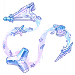
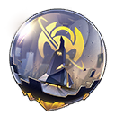

추천 광추
바다는 왜 노래하는가
효과 명중과 파티 지속 피해 보강
효과 자세히
지속 피해 후 적의 받는 지속 피해 증가.
시간의 기억에 대한 재구성
효과 명중 +40%
효과 자세히
서로 다른 지속 피해로 예언을 쌓아 공격력·방어력 무시 증가.
필요한 건 기다림뿐
피해 +24% · 공격 후 속도
효과 자세히
추가 감전 계열 지속 피해로 결계 타격수를 보강.
사냥감의 시선
효과 명중 +40% · 지속 피해 +48%
효과 자세히
효과 명중 120%부터 맞추기 좋은 4성.
추천 유물
깊은 감옥에 수감된 죄수 4 · 즐거움에 취한 바다의 일각 2
- 머리
 주옵션HP부옵션효과 명중 120%까지 · 목표 속도 · 공격력%
주옵션HP부옵션효과 명중 120%까지 · 목표 속도 · 공격력% - 손
 주옵션공격력부옵션효과 명중 120%까지 · 목표 속도 · 공격력%
주옵션공격력부옵션효과 명중 120%까지 · 목표 속도 · 공격력% - 몸통
 주옵션효과 명중 / 공격력%부옵션효과 명중 120%까지 (주옵션 제외) · 목표 속도 · 공격력% (주옵션 제외)
주옵션효과 명중 / 공격력%부옵션효과 명중 120%까지 (주옵션 제외) · 목표 속도 · 공격력% (주옵션 제외) - 다리
 주옵션속도 / 공격력%부옵션효과 명중 120%까지 · 목표 속도 · 공격력% (주옵션 제외)
주옵션속도 / 공격력%부옵션효과 명중 120%까지 · 목표 속도 · 공격력% (주옵션 제외) - 구체
 주옵션물리 피해 / 공격력%부옵션효과 명중 120%까지 · 목표 속도 · 공격력% (주옵션 제외)
주옵션물리 피해 / 공격력%부옵션효과 명중 120%까지 · 목표 속도 · 공격력% (주옵션 제외) - 매듭

주옵션공격력% / 에너지 회복효율부옵션효과 명중 120%까지 · 목표 속도 · 공격력% (주옵션 제외)
이 조합을 추천하는 이유
지속 피해 수에 비례해 방어력 최대 18% 무시. 장신구 공격력 2,400/3,600에서 지속 피해 +12%/+24%.
깊은 감옥에 수감된 죄수 4 · 범은하 상사 2
- 머리
주옵션HP부옵션효과 명중 120%까지 · 목표 속도 · 공격력%
- 손
주옵션공격력부옵션효과 명중 120%까지 · 목표 속도 · 공격력%
- 몸통
주옵션효과 명중 / 공격력%부옵션효과 명중 120%까지 (주옵션 제외) · 목표 속도 · 공격력% (주옵션 제외)
- 다리
주옵션속도 / 공격력%부옵션효과 명중 120%까지 · 목표 속도 · 공격력% (주옵션 제외)
- 구체

주옵션물리 피해 / 공격력%부옵션효과 명중 120%까지 · 목표 속도 · 공격력% (주옵션 제외) - 매듭
 주옵션공격력% / 에너지 회복효율부옵션효과 명중 120%까지 · 목표 속도 · 공격력% (주옵션 제외)
주옵션공격력% / 에너지 회복효율부옵션효과 명중 120%까지 · 목표 속도 · 공격력% (주옵션 제외)
이 조합을 추천하는 이유
효과 명중 +10%와 효과 명중에 비례하는 공격력.
이 정도면 잘 키웠다
동일 파티·광추 기준 · 조건 [*]
| 스탯 | 추천 스탯 | 준종결 | 종결 |
|---|---|---|---|
| 효과 명중 [*] 승급 6단계 피해 증가 상한 기준. | 마을 120% | 마을 120% | 마을 120% |
| 속도 [*] 134와 160은 선택 가능한 행동 순서. 카프카가 지속 피해 부여 뒤 기폭하도록 조율. | 마을 134 | 마을 134 | 마을 160 선택 |
| 공격력 [*] 가이드 3,000~3,500+. 장신구 버프는 장착 조건 확인. | 마을 3,000 | 마을 3,250 | 마을 3,500+ |
육성 단계의 기준
Lv.80·유물 +15 기준. 입문·중간 목표는 육성 편의를 위한 단계이며, 완성값의 버프와 편성 조건은 각주를 확인.
성혼과 추천 돌파
다종 지속 피해와 기폭을 함께 키우려면 1돌. 2돌은 결계의 팀 피해 지원.
1팀 지속 피해 기존의 116%추천
특성이 같은 유형 지속 피해를 한 번 더 부여. 두 효과는 공존.
2결계 동안 피해 증가 팀 공유
진주의 현 효과가 모든 아군에게 적용.
3필살기 +2 · 일반 공격 +1
해당 스킬과 대응 강화 스킬의 레벨을 올린다.
4결계 적 모든 속성 저항 −20%
보라, 시간은 왜 흐르는가
5전투 스킬·특성 +2
해당 스킬과 대응 강화 스킬의 레벨을 올린다.
6물리 지속 피해 최대 12회
결계 발동 횟수 상한과 피해 배율 20% 증가.
추천 파티


기본 운영과 행적
기본 운영
전투 시작 결계에서 지속 피해를 먼저 부여하고 카프카로 기폭. 결계 종료 전에 필살기로 갱신한다.
행적 육성 순서
필살기 → 특성·전투 스킬 → 일반 공격. 승급 2단계 선결계와 6단계 효과 명중 환산 우선.
아하 속도 계산기 →기준과 출처 · 2026-11-25
4.7 게임 데이터 · Prydwen 개별 빌드